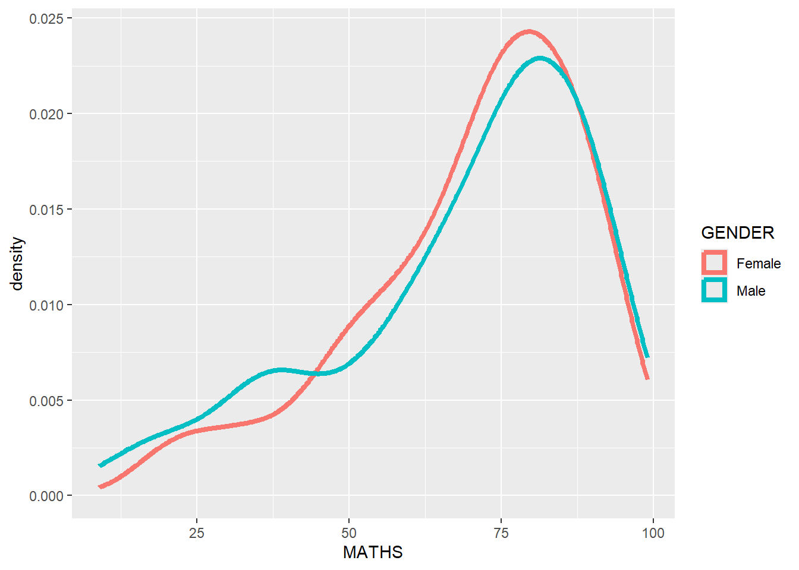

pacman::p_load(tidyverse)Hands-on Exercise 1
1 Overview
In this chapter, we will learn the basic principles and essential components of ggplot2. Also, we will gain hands-on experience on using these components to plot statistical graphics based on the principle of Layered Grammar of Graphics.
By then end of this chapter we will be able to apply the essential graphical elements provided by ggplot2 to create elegant and yet functional statistical graphics!
2 Getting Started
2.1 Installing and launching R Packages
The code chunk below uses p_load() of pacman package to check if tidyverse packages are installed in the computer. If they are, then they will be launched into R.
2.2 Importing the data
exam_data <- read_csv("data/Exam_data.csv")Rows: 322 Columns: 7
── Column specification ────────────────────────────────────────────────────────
Delimiter: ","
chr (4): ID, CLASS, GENDER, RACE
dbl (3): ENGLISH, MATHS, SCIENCE
ℹ Use `spec()` to retrieve the full column specification for this data.
ℹ Specify the column types or set `show_col_types = FALSE` to quiet this message.3 R Graphics vs ggplot
hist(exam_data$MATHS)
ggplot(data=exam_data, aes(x = MATHS)) +
geom_histogram(bins=10,
boundary = 100,
color="black",
fill="grey") +
ggtitle("Distribution of Maths scores")
From the 2 codes shown for both the Histogram’s the code chunk is relatively simple if R Graphics is used. However, ggplot 2 is actually recommended. Why this is so is because:
Important
“The transferable skills from ggplot2 are not the idiosyncrasies of plotting syntax, but a powerful way of thinking about visualisation, as a way of mapping between variables and the visual properties of geometric objects that you can perceive.” - Hadley Wickham
4 Grammar of Graphics
Introduced by Leland Wilkinson (1999) Grammar of Graphics, is a general scheme for data visualization which breaks up graphs into semantic components such as scales and layers.
In essence, Grammar of Graphics defines the rules of structuring mathematical and aesthetic elements into a meaningful graph.
A Layered Grammar of Graphics

Themes: modify all non-data components of a plot, such as main title, sub-title, y-axis title, or legend background.
Coordinate systems: define the plane on which data are mapped on the graphic.
Statistics: statistical transformations that summarise data (e.g. mean, confidence intervals).
Facets: split the data into subsets to create multiple variations of the same graph (panelling, multiple plots).
Geometrics: The visual elements used for our data, such as point, bar, or line.
Aesthetics: take attributes of the data and use them to influence visual characteristics, such as position, colours, size, shape, or transparency.
Data: The dataset being plotted.
4.1 Essential Grammatical Elements in ggplot2: data
Let us begin by calling the ggplot() function using this code chunk.
ggplot(data=exam_data)
Note
- A blank canvas appears.
ggplot()initializes a ggplot object.- The data argument defines the dataset to be used for plotting.
- If the dataset is not already a data.frame, it will be converted to one by
fortify().
4.2 Essential Grammatical Elements in ggplot2: Aesthetic mappings
Aesthetic mappings cna take attributes of the data and and use them to influence visual characteristics, such as position, colour, size, shape, or transparency. Each visual characteristic can thus encode an aspect of the data and be used to convey information.
All aesthetics of a plot are specified in the aes() function call (each geom layer can also have its own aes specification)
The code chunk below adds the aesthetic element into the plot.
ggplot(data=exam_data,
aes(x = MATHS))
Note that upon using the code chunk, ggplot includes the x-axis and the axis’s label.
4.3 Essential Grammatical Elements in ggplot2: geom
- Geometric objects are the actual marks we put on a plot. Examples include:
- geom_point for drawing individual points (e.g., a scatter plot)
- geom_line for drawing lines (e.g., for a line charts)
- geom_smooth for drawing smoothed lines (e.g., for simple trends or approximations)
- geom_bar for drawing bars (e.g., for bar charts)
- geom_histogram for drawing binned values (e.g. a histogram)
- geom_polygon for drawing arbitrary shapes geom_map for drawing polygons in the shape of a map! (You can access the data to use for these maps by using the map_data() function).

- A plot must have at least one geom; there is no upper limit. You can add a geom to a plot using the + operator.
- For complete list, please refer to here.
4.3.1 Geometric Objects: geom_bar
The code chunk below plots a bar chart byy using the geom_bar() function.
ggplot(data=exam_data,
aes(x=RACE)) +
geom_bar()
4.3.2 Geometric Objects: geom_dotplot
In a dot plot, the width of a dot corresponds to the bin width (or maximum width, depending on the binning algorithm), and dots are stacked, with each dot representing one observation.
In the code chunk below, geom_dotplot() of ggplot2 is used to plot a dot plot.
ggplot(data=exam_data,
aes(x = MATHS)) +
geom_dotplot(dotsize = 0.5)Bin width defaults to 1/30 of the range of the data. Pick better value with
`binwidth`.
Warning
Do note that the Y Scale might not be useful and in fact misleading.
Note
The code chunk below will perform the following two steps:
scale_y_continuous()is used to turn off the y-axis, and- binwidth argument is used to change the binwidth to 2.5.
ggplot(data=exam_data,
aes(x = MATHS)) +
geom_dotplot(binwidth=2.5,
dotsize = 0.5) +
scale_y_continuous(NULL,
breaks = NULL)
4.3.3 Geometric Objects: geom_histogram()
In the code chunk below, geom_histogram() is used to create a simple histogram by using values in MATHS field of exam_data.
ggplot(data=exam_data,
aes(x = MATHS)) +
geom_histogram()`stat_bin()` using `bins = 30`. Pick better value with `binwidth`.
Note
To note that the default bin is at 30.
4.3.4 Modifying a geometric object by changing geom()
In the code chunk below,
- bins argument is used to change the number of bins to 20,
- fill argument is used to shade the histogram with light blue color, and
- color argument is used to change the outline colour of the bars in black
ggplot(data=exam_data,
aes(x= MATHS)) +
geom_histogram(bins=20,
color="black",
fill="light blue")
4.3.5 Modifying a geometric object by changing aes()
- The code chunk below changes the interior colour of the histogram (i.e. fill) by using sub-group of aesthetic().
ggplot(data=exam_data,
aes(x= MATHS,
fill = GENDER)) +
geom_histogram(bins=20,
color="grey30")
4.3.6 Geometric Objects: geom_density()
geom-density() computes and plots kernel density estimate, which is a smoothed version of the histogram. This makes it an useful alternative to the histogram for continuous data that comes from a smooth distribution.
The code below plots the distribution of Maths scores in a kernel density estimate plot.
ggplot(data=exam_data,
aes(x = MATHS)) +
geom_density()
Using colour/fill arguments in aes(), the following can be plotted
ggplot(data=exam_data,
aes(x = MATHS,
colour = GENDER)) +
geom_density(linewidth = 1.5)
Note that linewidth argument was utilised within the geom_density() function to increase thickness of line.
4.3.7 Geometric Objects: geom_boxplot()
geom_boxplot() displays continuous value list. It visualises five summary statistics (the median, two hinges and two whiskers), and all “outlying” points individually.
The code chunk below plots boxplots by using geom_boxplot().
ggplot(data=exam_data,
aes(y = MATHS,
x= GENDER)) +
geom_boxplot()
Notches are used in box plots to help visually assess whether the medians of distributions differ. If the notches do not overlap, this is evidence that the medians are different.
The following code chunk uses notched plot instead of boxplot to plot the distribution of Maths scores by gender.
ggplot(data=exam_data,
aes(y = MATHS,
x= GENDER)) +
geom_boxplot(notch=TRUE)
4.3.8 Geometric Objects: geom_violin()
geom_violin is designed for creating violin plot. Violin plots are a way of comparing multiple data distributions.
When ordinary density curves are plotted, there tends to be difficulty in comparinf multiple distributions since the lines usually interfere with one another.
With the violin plot, comparing several distributions will be easier since they are beside each other.
The code below plot the distribution of Maths score by gender in violin plot.
ggplot(data=exam_data,
aes(y = MATHS,
x= GENDER)) +
geom_violin()
4.3.9 Geometric Objects: geom_point()
geom_point() is especially useful for creating scatterplots.
The code chunk below plots a scatterplot showing the Maths and English grades of pupils by using geom_point().
ggplot(data=exam_data,
aes(x= MATHS,
y=ENGLISH)) +
geom_point()
4.3.10 geom objects can be combined
The code chunk below plots the data points on the boxplots by using both geom_boxplot() and geom_point().
ggplot(data=exam_data,
aes(y = MATHS,
x= GENDER)) +
geom_boxplot() +
geom_point(position="jitter",
size = 0.5)4.4 Essential Grammatical Elements in ggplot2: stat
The Statistics functions statistically transform data, usually as some form of summary. For example:
- frequency of values of a variable (bar graph)
- a mean
- a confidence limit
- There are two ways to use these functions:
add a
stat_()function and override the default geom, oradd a
geom_()function and override the default stat.
4.4.1 Working with stat()
The boxplots shown below are incomplete because the positions of the means are not shown.
ggplot(data=exam_data,
aes(y = MATHS, x= GENDER)) +
geom_boxplot()
4.4.2 Working with stat - the stat_summary() method
Using the code chunk below adds mean values by using stat_summary() function and overriding the default geom.
ggplot(data=exam_data,
aes(y = MATHS, x= GENDER)) +
geom_boxplot() +
stat_summary(geom = "point",
fun="mean",
colour ="red",
size=4) 
4.4.3 Working with stat - the geom() method
The code chunk below also adds mean values by using geom_() function and overriding the default stat.
ggplot(data=exam_data,
aes(y = MATHS, x= GENDER)) +
geom_boxplot() +
geom_point(stat="summary",
fun="mean",
colour ="red",
size=4)
4.4.4 Addition of best fit curve on a scatterplot
The scatterplot below shows the relationship of Maths and English grades of pupils. The interpretability of this graph can be improved by adding a best fit curve.

In the code chunk below, geom_smooth() is used to plot a best fit curve on the scatterplot.
ggplot(data=exam_data,
aes(x= MATHS, y=ENGLISH)) +
geom_point() +
geom_smooth(linewidth=0.5)`geom_smooth()` using method = 'loess' and formula = 'y ~ x'
Note that the default method used is loess.
The default smoothing method can be overridden as shown below.
ggplot(data=exam_data,
aes(x= MATHS,
y=ENGLISH)) +
geom_point() +
geom_smooth(method=lm,
linewidth=0.5)`geom_smooth()` using formula = 'y ~ x'
4.5 Essential Grammatical Elements in ggplot2: Facets
Facetting generates small multiples (sometimes also called trellis plot), each displaying a different subset of the data.
This acts as an alternative to aesthetics for displaying additional discrete variables. ggplot2 supports two types of factes, namely: facet_grid() and facet_wrap.
4.5.1 Working with facet_wrap()
facet_wrap wraps a 1d sequence of panels into 2d. This is generally a better use of screen space than facet_grid because most displays are roughly rectangular.
The code chunk below plots a trellis plot using facet-wrap().
ggplot(data=exam_data,
aes(x= MATHS)) +
geom_histogram(bins=20) +
facet_wrap(~ CLASS)
4.5.2 facet_grid() function
facet_grid() forms a matrix of panels defined by row and column facetting variables.
It is most useful when we have two discrete variables, and all combinations of the variables exist in the data.
The code chunk below plots a trellis plot using facet_grid().
ggplot(data=exam_data,
aes(x= MATHS)) +
geom_histogram(bins=20) +
facet_grid(~ CLASS)
4.6 Essential Grammatical Elements in ggplot2: Coordinates
The Coordinates functions map the position of objects onto the plane of the plot. There are a number of different possible coordinate systems to use, they are:
coord_cartesian(): the default cartesian coordinate systems, where you specify x and y values (e.g. allows you to zoom in or out).
coord_flip(): a cartesian system with the x and y flipped.
coord_fixed(): a cartesian system with a “fixed” aspect ratio (e.g. 1.78 for a “widescreen” plot).
coord_quickmap(): a coordinate system that approximates a good aspect ratio for maps.
4.6.1 Working with Coordinates
By the default, the bar chart of ggplot2 is in vertical form as ashown below.
ggplot(data=exam_data,
aes(x=RACE)) +
geom_bar()
The code chunk below flips the horizontal bar chart into vertical bar chart by using coord_flip().
ggplot(data=exam_data,
aes(x=RACE)) +
geom_bar() +
coord_flip()
4.6.2 Changing the y - and x-axis range
The scatterplot at the bottom is slightly misleading because the y-aixs and x-axis range are not equal.
ggplot(data=exam_data,
aes(x= MATHS, y=ENGLISH)) +
geom_point() +
geom_smooth(method=lm, linewidth=0.5)`geom_smooth()` using formula = 'y ~ x'
Hence, code chunk below fixes both the y-axis and x-axis range from 0-100.
ggplot(data=exam_data,
aes(x= MATHS, y=ENGLISH)) +
geom_point() +
geom_smooth(method=lm,
linewidth=0.5) +
coord_cartesian(xlim=c(0,100),
ylim=c(0,100))`geom_smooth()` using formula = 'y ~ x'
4.7 Essential Grammatical Elements in ggplot2: Themes
Themes control elements of the graph not related to the data. For example:
- background colour
- size of fonts
- gridlines
- colour of labels
Built-in themes include: - theme_gray() (default) - theme_bw() - theme_classic()
A list of theme can be found at this link. Each theme element can be conceived of as either a line (e.g. x-axis), a rectangle (e.g. graph background), or text (e.g. axis title).
4.7.1 Working with theme
The code chunk below plots a horizontal bar chart using theme_gray().
ggplot(data=exam_data,
aes(x=RACE)) +
geom_bar() +
coord_flip() +
theme_gray()
A horizontal bar chart is plotted using the theme_classic().
ggplot(data=exam_data,
aes(x=RACE)) +
geom_bar() +
coord_flip() +
theme_classic()
A horizontal bar chart is plotted using the theme_minimal().
ggplot(data=exam_data,
aes(x=RACE)) +
geom_bar() +
coord_flip() +
theme_minimal()
4.8 References
- Kam, T. S. (2024). A Layered Grammar of Graphics: ggplot2 methods.
- Hadley Wickham (2023) ggplot2: Elegant Graphics for Data Analysis. Online 3rd edition.
- Winston Chang (2013) R Graphics Cookbook 2nd edition. Online version.
- Healy, Kieran (2019) Data Visualization: A practical introduction. Online version
- Learning ggplot2 on Paper – Components
- Learning ggplot2 on Paper – Layer
- Learning ggplot2 on Paper – Scale